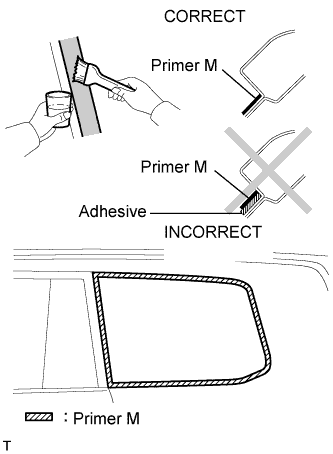
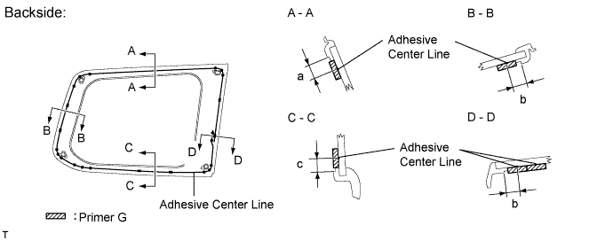
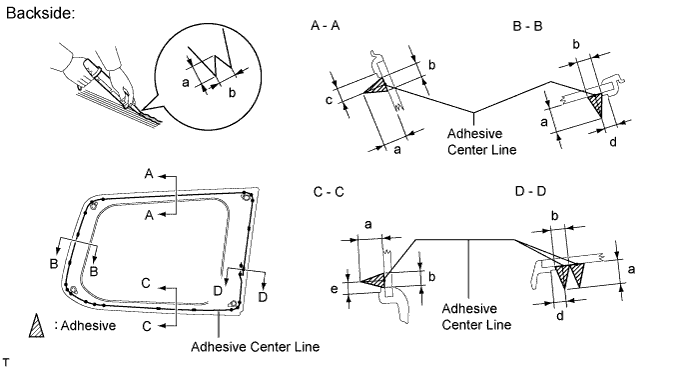
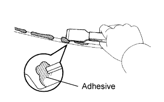

QUARTER WINDOW GLASS > INSTALLATION |
| 1. INSTALL QUARTER WINDOW ASSEMBLY |
 |
Using a brush or sponge, apply primer M to the exposed part of the vehicle body.
Using a brush or sponge, apply Primer G to the contact surface of the glass.

| Area | Specified Condition |
| a | 6.8 mm (0.268 in.) |
| b | 6.5 mm (0.256 in.) |
| c | 6.7 mm (0.264 in.) |
Apply adhesive to the quarter window glass.
Cut off the tip of the cartridge nozzle as shown in the illustration.

| Area | Specified Condition |
| a | 12.0 mm (0.472 in.) |
| b | 8.0 mm (0.315 in.) |
| c | 6.8 mm (0.268 in.) |
| d | 6.5 mm (0.256 in.) |
| e | 6.7 mm (0.264 in.) |
| Temperature | Usage Time Frame |
| 35°C (95°F) | 15 minutes |
| 20°C (68°F) | 1 hour 40 minutes |
| 5°C (41°F) | 8 hours |
Load the sealer gun with the cartridge.
Apply adhesive to the quarter window glass as shown in the illustration.
Install the quarter window glass to the vehicle body.
Hold the quarter window glass in place securely with protective tape or equivalent until the adhesive hardens.
Lightly press the front surface of the glass to ensure a close fit.
 |
Using a scraper, remove any excess or protruding adhesive.
| Temperature | Minimum Time Prior to Driving Vehicle |
| 35°C (95°F) | 1 hour 30 minutes |
| 20°C (68°F) | 5 hours |
| 5°C (41°F) | 24 hours |
Connect the connectors.
| 2. CHECK FOR LEAKS AND REPAIR |
Conduct a leak test after the adhesive has completely hardened.
Seal any leaks with auto glass sealer.
| 3. INSTALL ROOF HEADLINING ASSEMBLY (w/o Sliding Roof) |
Install the roof headlining (Click here).
| 4. INSTALL ROOF HEADLINING ASSEMBLY (w/ Sliding Roof) |
Install the roof headlining (Click here).